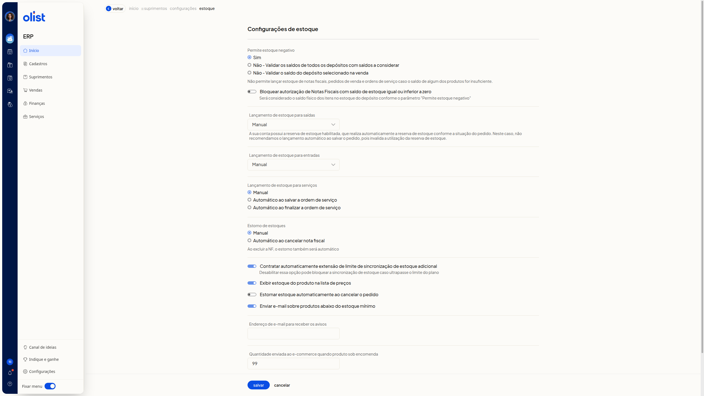
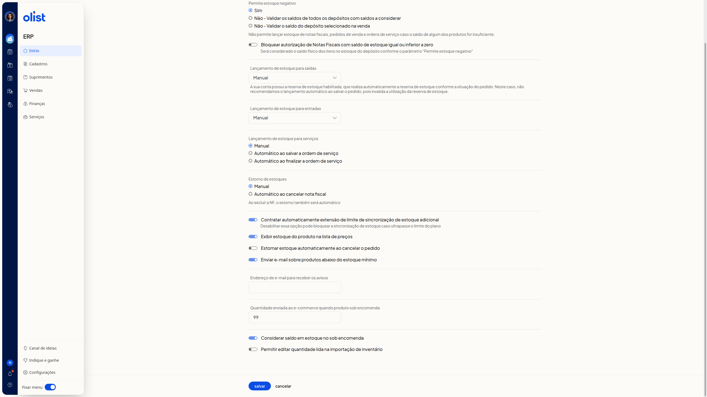

Como configurar o estoque
Descrição
A tela Configurações de estoque reúne os parâmetros de estoque do ERP da Olist. Nela, você define estoque negativo, bloqueio de autorização de notas fiscais, momento do lançamento em saídas, entradas e serviços, estorno, sincronização, lista de preços, aviso por email, sob encomenda e importação de inventário.
O caminho é Início > Suprimentos > Configurações > Estoque.
Instruções
Importante: se a reserva de estoque estiver habilitada, a tela informa que o estoque é reservado automaticamente conforme a situação do pedido. Nesse caso, a tela não recomenda Automático ao salvar o pedido em Lançamento de estoque para saídas, porque essa alternativa invalida a utilização da reserva de estoque.
Como acessar
-
Acesse Início > Suprimentos > Configurações > Estoque.

-
Ao terminar os ajustes, clique em Salvar, no fim da tela. Cancelar fica ao lado.
O que cada opção faz
Nenhum campo é obrigatório.
Estoque negativo e autorização de notas fiscais
Em Permite estoque negativo, escolha uma alternativa:
- Sim
- Não - Validar os saldos de todos os depósitos com saldos a considerar
- Não - Validar o saldo do depósito selecionado na venda
A tela informa que não permite lançar estoque de notas fiscais, pedidos de venda e ordens de serviço caso o saldo de algum dos produtos for insuficiente.
Em Bloquear autorização de Notas Fiscais com saldo de estoque igual ou inferior a zero, ligue ou desligue a opção. O saldo considerado é o saldo físico dos itens no depósito, conforme Permite estoque negativo.
Lançamento de estoque
Em Lançamento de estoque para saídas, escolha uma alternativa:
- Manual
- Automático ao autorizar a nota fiscal
- Automático ao salvar a nota fiscal
- Automático ao salvar o pedido
- Automático ao marcar pedido como enviado
Com a reserva de estoque habilitada, a tela não recomenda Automático ao salvar o pedido.
Em Lançamento de estoque para entradas, escolha uma alternativa:
- Manual
- Automático ao autorizar a nota fiscal
- Automático ao salvar a nota fiscal
- Automático ao salvar a ordem de compra
- Automático ao finalizar conferência de compra
Em Lançamento de estoque para serviços, escolha uma alternativa:
- Manual
- Automático ao salvar a ordem de serviço
- Automático ao finalizar a ordem de serviço
Estorno
Em Estorno de estoques, escolha uma alternativa:
- Manual
- Automático ao cancelar nota fiscal
Abaixo de Automático ao cancelar nota fiscal, a tela informa: Ao excluir a NF, o estorno também será automático.
Estornar estoque automaticamente ao cancelar o pedido: ligue ou desligue a opção.
Sincronização, lista de preços e avisos
Contratar automaticamente extensão de limite de sincronização de estoque adicional: ligue ou desligue a opção. Desabilitar pode bloquear a sincronização de estoque caso ultrapasse o limite do plano.
Exibir estoque do produto na lista de preços: ligue ou desligue a opção.
Enviar e-mail sobre produtos abaixo do estoque mínimo: ligue ou desligue a opção. Informe o email em Endereço de e-mail para receber os avisos.

Sob encomenda e inventário
Em Quantidade enviada ao e-commerce quando produto sob encomenda, informe a quantidade enviada ao ecommerce quando o produto está sob encomenda.
Considerar saldo em estoque no sob encomenda: ligue ou desligue a opção.
Permitir editar quantidade lida na importação de inventário: ligue ou desligue a opção.
Ao concluir as escolhas, clique em Salvar.
Perguntas frequentes
A reserva de estoque altera o lançamento em saídas?
Sim. Com a reserva de estoque habilitada, o estoque é reservado automaticamente conforme a situação do pedido. A tela não recomenda Automático ao salvar o pedido, porque essa alternativa invalida a utilização da reserva de estoque.
O que acontece ao desabilitar a extensão de sincronização?
Desabilitar Contratar automaticamente extensão de limite de sincronização de estoque adicional pode bloquear a sincronização de estoque caso ultrapasse o limite do plano.
Qual saldo o bloqueio de autorização considera?
O saldo físico dos itens no estoque do depósito, conforme Permite estoque negativo.
Ao excluir a nota fiscal, o estorno é automático?
Abaixo de Automático ao cancelar nota fiscal, a tela informa: Ao excluir a NF, o estorno também será automático.
Os campos são obrigatórios?
Não. Nenhum campo é obrigatório.
Links relacionados
Se precisar de ajuda com estas configurações, fale com o suporte.